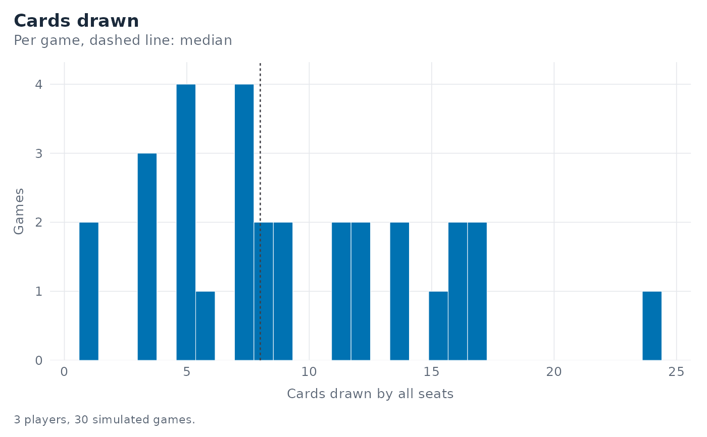

Draws the distribution of cards drawn per game, one panel per player count, with a dashed line at each panel's median. A single player count is drawn without a strip and named in the caption instead.
Usage
mm_plot_draws(sims, bins = 30L, call = rlang::caller_env())Arguments
- sims
A tibble from
mm_simulate().- bins
Integer; number of histogram bins.
- call
The environment used for error reporting. Experts only.
See also
mm_draw_summary() for the underlying summary.
Other plots:
mm_plot_game_length(),
mm_plot_strategy_compare(),
mm_plot_win_rate(),
mm_theme()
Examples
sims <- mm_simulate(n = 30, n_players = 3, seed = 1)
mm_plot_draws(sims)
